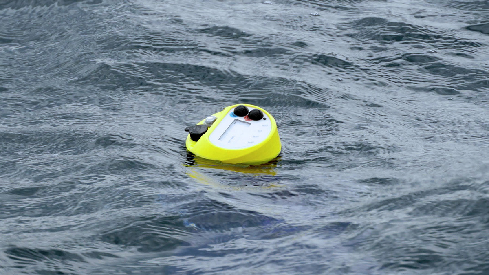

At ETH Zurich, I led the development of a pioneering 3D scanning process to digitize over 2,400 type specimens. This project not only set new standards in 3D digitization but also focused on efficiency and cost reduction. I oversaw the design of machine components, the upgrade of control systems, and meticulous documentation while managing a diverse team. My emphasis on quality control and risk management ensured the integrity of the unique specimens, all while maintaining cost-effectiveness.
- Globe
More Insect Specimens
Balancing innovation and efficiency, our project was driven by three ambitious objectives: developing a secure and efficient process for handling delicate, one-of-a-kind specimens; creating an automated workflow for generating high-quality 3D models; and redesigning our imaging machine to capture specimens as small as 1.5 mm. These goals were designed to enhance precision, streamline processes, and safeguard our valuable specimens. To meet production targets while testing new tools and machinery for future projects, we implemented a hybrid process that effectively balances immediate production needs with long-term innovation.

We do not have enough information about the ocean that surrounds us. To better understand the impacts of climate change, marine food resources, pollution, and our environment as a whole, we need more comprehensive data. OMNI is a versatile, low-cost, and easily deployable ocean sensing system designed to collect detailed and diverse information from the sea. The ocean sensor float consists of multiple modules, which can be equipped with various sensors, energy-harvesting units, and communication options.
Reliability is key, requiring careful consideration of every component and connection. The units must be built to endure the harsh ocean environment and perform in any weather conditions.
We began with a simple waterproof box and sensors connected to an Arduino. Armed with this prototype, we reached out to research laboratories for feedback. It quickly became clear that most ocean research equipment is custom-made and prohibitively expensive. In response, we developed OMNI—a low-cost, modular float system that is easy to assemble. Both the technology and the data it collects are open-source, freely available to anyone. So far, over 35 units have been built in the DLX Design Lab.

I began my career at BMW Group as a teenager and spent a total of 14 years with the company. Over time, I worked in various departments before ultimately finding my place in the design team. I led both digital and physical design models. A digital twin would complement the full-scale 1:1 clay model, allowing for seamless data exchange with the engineering teams.

The 'Vision Efficient Dynamics' concept car was one of the most exciting and unconventional project I worked on at BMW. It all began with the extraordinary designer Mario Majdandzic, who brought his vision to life through a detailed cardboard model. From there, it was an exhilarating process—starting with a polygon model and, within about eight weeks, refining it into final exterior surfaces using a Class-A NURBS model.
At BMW Group, I worked on the Mini 3-Door (R56) Phase 3, the BMW 3 Series GT (F34) Phase 3, the i8 Spyder concept car. In these roles, I was responsible for modeling the exterior surfaces within the design department.

The chair is crafted from recycled newspaper and PVA glue, showcasing the versatile potential of paper as a material. Its organic shape ensures a sturdy and structurally design. The choice of material was inspired by experiments with small-scale papier-mâché models and insights from paper pulp applications in the packaging industry. With this work, I aimed to demonstrate that paper can structurally compete with modern composite materials.

The process begins with a flat piece of elastic fabric, such as spandex, which is stretched into a wooden frame to form the desired shape. A self-developed papier-mâché spray gun is then used to temporarily freeze the fabric's shape. After a drying period, a second layer of the recycled newspaper and PVA glue mixture is applied to provide final structural strength. By tinting the second layer, an interesting pattern can be achieved.
This technique requires minimal machinery, emphasizing the simplicity and sustainability of the process. Additionally, the spandex fabric can be reused multiple times for creating different shapes.
Developing a method to make papier-mâché structurally capable was a significant challenge. It took many prototypes and setbacks to perfect this approach. The beauty of the process lies in its resourcefulness, requiring only basic tools and materials. The result is a lightweight chair that celebrates the potential of paper while emphasizing craftsmanship and sustainability.
The project is focused on the LG OLED Technology for the Euroluce, Milan design week. The concept introduces the technology with its features and possibilities in the lighting sector. The thin OLED strips are lightweight, shatter-resistant and offer a homogenous light surface.
Medusa, comprises eight flexible OLED panels that extend out from a central ring. It aesthetic drives from plankton floating in the ocean. The shape of the strips is described via the gravitational force pulling the weights at the end of the strip. It becomes gently animated without employing additional energy.
- Globe
Interview Ross Lovegrove

The aim of the project is to enhance understanding of the ocean currents in Sagami Bay, Japan. Located southwest of Tokyo, it is one of the most popular seaside destinations for Tokyo residents. Predicting ocean currents in this area is particularly challenging due to the complex interplay between the Sagami Trench and global ocean currents.
Ultimately, we successfully developed and produced two fully deployable devices in our laboratory, meeting the rigorous demands of oceanic use.
Our exploration began with a series of low-fidelity prototypes to evaluate various design choices in the ocean environment. Leveraging OMNI MKIII device technology, we developed a series of real-time drifters to gather critical data.